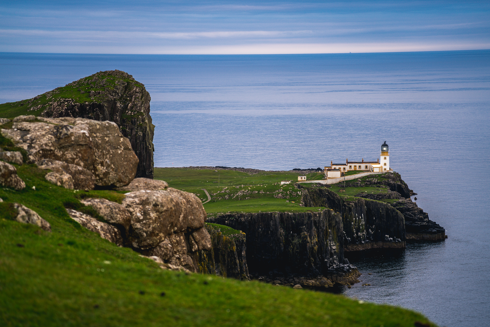

La île Sinistre

La île Sinistre is set on a fictional island off the coast of France. Join Dr. Crowbar and the rest of his French class in a journey of danger, survival, conspiracy, and action.
For the best experience, please use headphones.
Start Your Adventure!